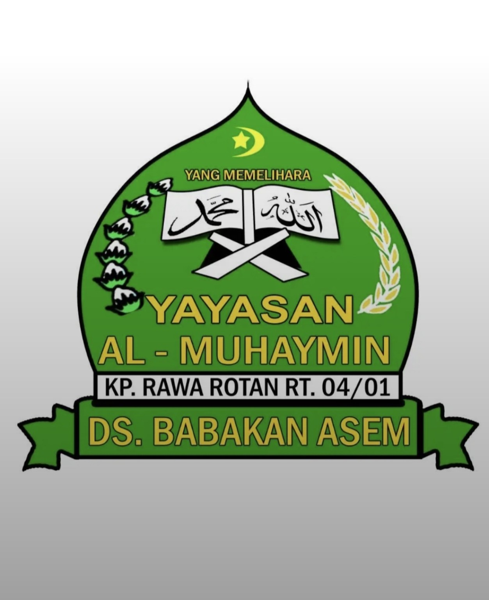

Pembukaan
Pembukaan acara Milad Al-Muhaymin ke-14.

UNDANGAN • MILAD KE-14
بِسْمِ اللّٰهِ الرَّحْمٰنِ الرَّحِيْمِ
26 SEPTEMBER 2026 • 07.30 WIB
MILAD KE-14
Dengan penuh rasa syukur, kami mengundang Bapak/Ibu/Saudara/i untuk hadir dan turut memeriahkan Milad Al-Muhaymin yang ke-14.
MENUJU HARI ACARA
DETAIL ACARA
26 September 2026
07.30 WIB
Kp. Rawarotan RT. 04/01
Babakan Asem, Teluknaga
LOKASI ACARA
Kp Rawarotan No. RT 04/01, Babakan Asem, Kec. Teluknaga, Kabupaten Tangerang, Banten 15510
📍 Buka Google MapsSUSUNAN ACARA
Pembukaan acara Milad Al-Muhaymin ke-14.
Rangkaian pembacaan bersama.
Penampilan gema wahyu ilahi dan saritilawah.
Ketua Panitia, Ketua Yayasan, Ketua Pondok, Ketua Majlis Gayatri Asyifah, dan Ketua Majlis Silatuhrahmi.
Penampilan santri Al-Qur'an dan pondok.
Penampilan seni tari pertama.
Hafalan surah-surah pendek dari santri Iqro.
Penampilan seni tari kedua.
Hafalan Surah Ad-Duha, Al-A'la, dan An-Naba.
Penampilan seni tari ketiga.
Penampilan kelompok paduan suara.
Tilawah Al-Qur'an oleh Qori.
Tausyiah oleh Kyai Nasyim.
Doa bersama dan penutupan seluruh rangkaian acara.
وَمَا بِكُم مِّن نِّعْمَةٍ فَمِنَ اللَّهِ
“Dan segala nikmat yang ada padamu, maka dari Allah-lah datangnya.”
QS. An-Nahl: 53Merupakan suatu kehormatan dan kebahagiaan bagi kami apabila Bapak/Ibu/Saudara/i berkenan hadir dan turut memeriahkan acara Milad ke-14.
Panitia Milad ke-14
Pondok Pesantren Modern Al-Muhaymin